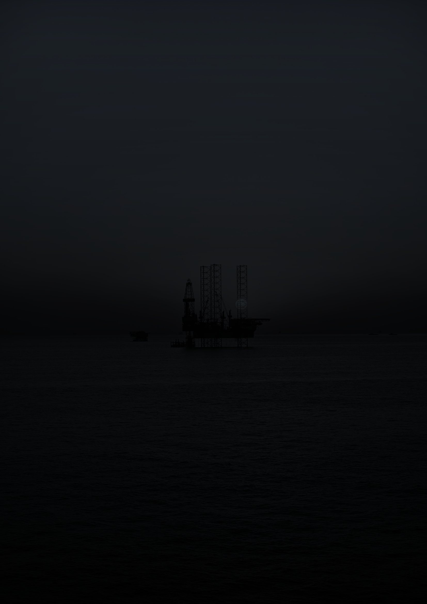
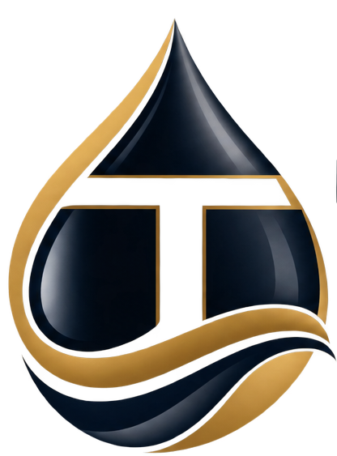
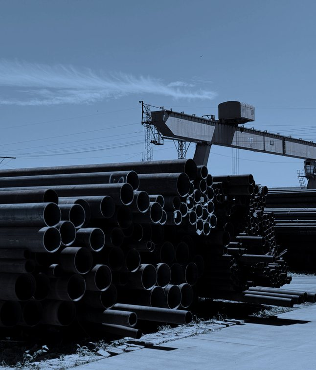
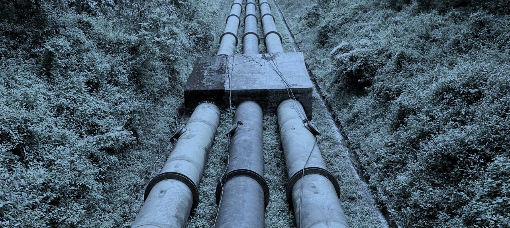
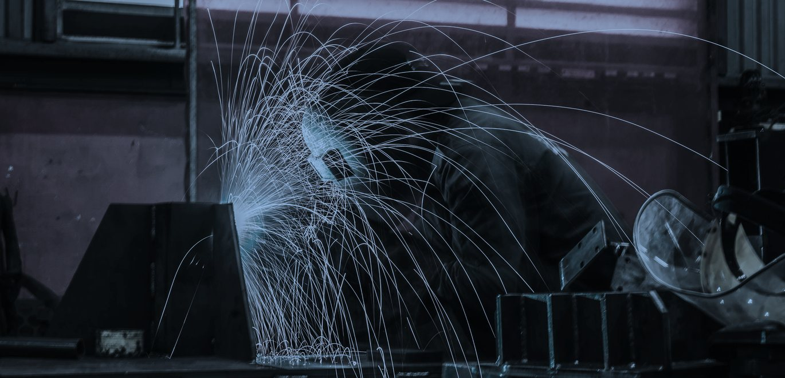
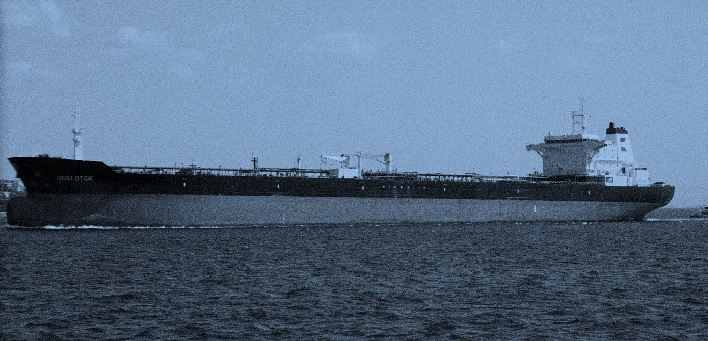
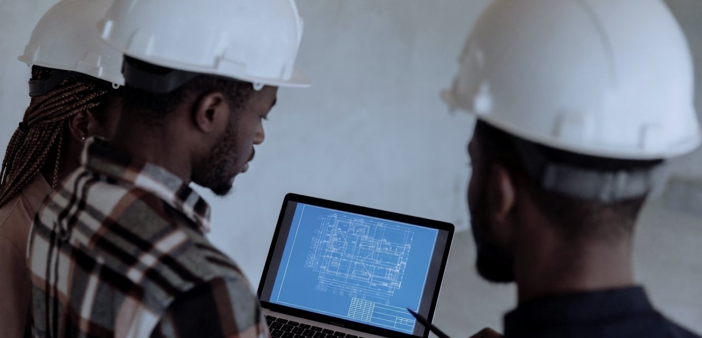
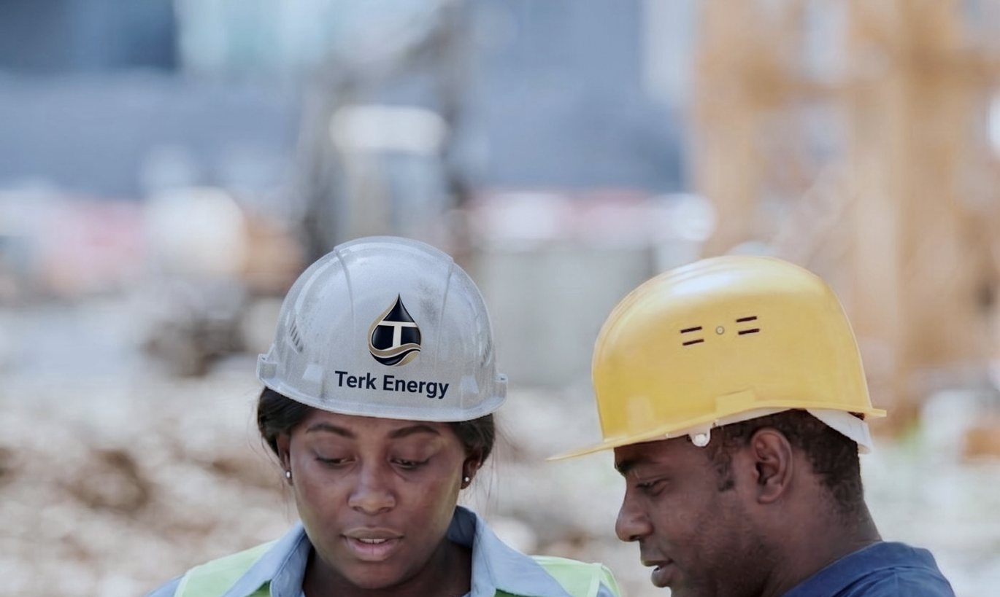

An indigenous integrated energy services company working across the Nigerian oil and gas value chain, offshore and onshore.
Terk Energy serves the Nigerian oil and gas value chain, offshore and onshore. Our offering covers engineering, procurement, construction, installation and commissioning; the operation, maintenance and upgrade of oil and gas facilities; alternative crude evacuation; maritime and logistics solutions; and asset development.
Terk and its affiliates are committed to safety and to sustainability, and we continue to meet the demands of our clients efficiently: on schedule, to specification, and without shortcuts on either count.
Our experience, our strategic partnerships and our understanding of the Nigerian oil and gas value chain, offshore and onshore, equip us with the technical expertise and the resources to deliver diverse projects when given the opportunity.

Vision
To be a leading integrated energy service provider in Africa.
Mission
Our mission is to create a reputable organization through hard work and diligence, whilst making a positive impact on our community and our environment.
Five commitments that decide how we take on work and how we behave once we have it.
How the company is organised
Delivery, assurance and commercial functions are held in-house rather than assembled per project.
One point of responsibility across engineering and construction, marine and logistics, and advisory. Each line lists what we actually take on, along with our technical partners.


Engineering, procurement, construction, installation and commissioning. We take fixed-scope responsibility on onshore and offshore facilities, from front-end design through to handover, and carry procurement and construction with it.
Scope of work

We move crude and cargo. Our Alternative Crude Evacuation System runs end to end, covering regulatory and naval clearance, security, shuttle tanker, ship-to-ship transfer into the mother vessel, and hydrocarbon accounting, all under a single point of responsibility rather than a chain of separate vendors.
Scope of work

Technical and commercial judgement for assets and transactions. We advise on asset development, run due diligence across the technical, commercial and regulatory dimensions, and structure gas commercialization.
Scope of work
These describe the shape of the work we are set up to take. They are capability, not a claim about any particular contract.
How the work is carried
Terk Energy demonstrates leadership and commitment to HSE by the proper allocation of time and resources to HSES matters, and by giving HSES equal priority with work completion and milestone achievement. Our leadership commits as follows.

Our primary goal is to achieve the highest standards of quality in all our business practices and operations, without compromise. We are committed to ensuring that our work processes and business activities meet standards and exceed expectations for the quality and satisfaction of all interested parties. To this end, we shall:
If you are running a pre-qualification and need our HSE plan, quality manual or policy statements, ask and we will send them.
Send us your tender document, scope of work, or the problem you need solved. We will review it and respond with a clear answer on how we can support you, and tell you who will be handling it.